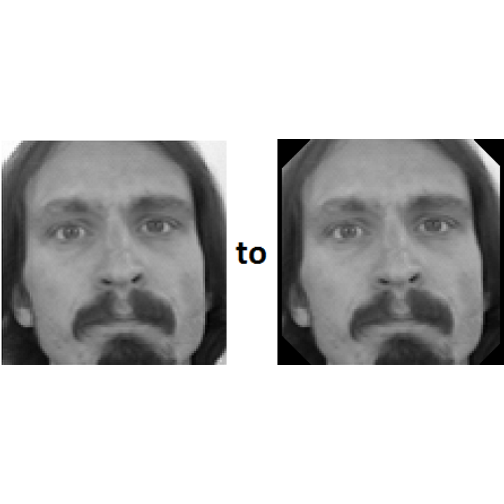
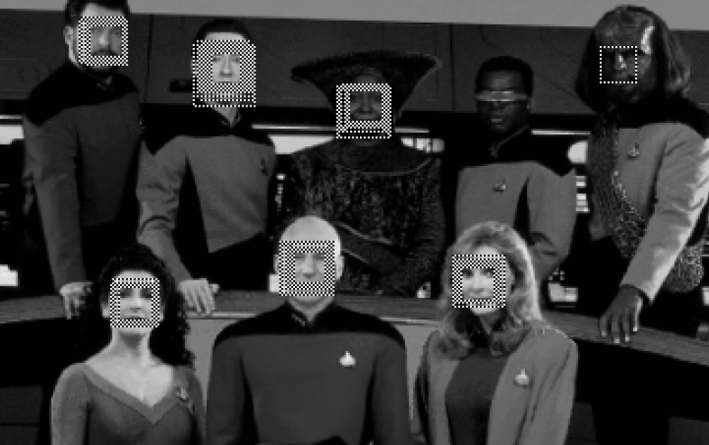
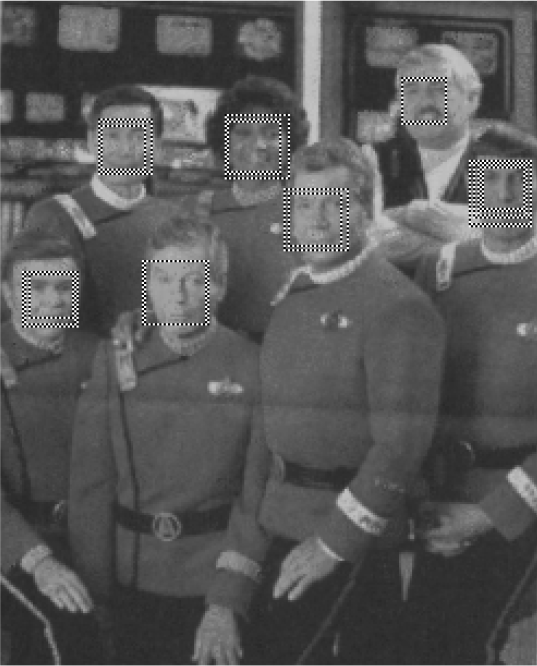

Facial Keypoint Detection
Case Study, Kaggle Competition

Sai Kiran Vadhi
Contents
- Introduction & Data Exploration
- Gaussian Clustering Algorithm
- Random Forest
- Support Vector Machines
- Output (Predictions)
Introduction
Facial Keypoint Detection is an online data mining competition organised by Kaggle.
The goal of the competition is to locate specific keypoints on face images.
Introduction & Data Exploration
- Kaggle has provided the competitors with train.csv and test.csv for the competition.
Train.csv
nrow(training_full_data)
## [1] 7049
ncol(training_full_data)
## [1] 30
Train.csv
colnames(training_full_data)
## [1] "left_eye_center_x" "left_eye_center_y"
## [3] "right_eye_center_x" "right_eye_center_y"
## [5] "left_eye_inner_corner_x" "left_eye_inner_corner_y"
## [7] "left_eye_outer_corner_x" "left_eye_outer_corner_y"
## [9] "right_eye_inner_corner_x" "right_eye_inner_corner_y"
## [11] "right_eye_outer_corner_x" "right_eye_outer_corner_y"
## [13] "left_eyebrow_inner_end_x" "left_eyebrow_inner_end_y"
## [15] "left_eyebrow_outer_end_x" "left_eyebrow_outer_end_y"
## [17] "right_eyebrow_inner_end_x" "right_eyebrow_inner_end_y"
## [19] "right_eyebrow_outer_end_x" "right_eyebrow_outer_end_y"
## [21] "nose_tip_x" "nose_tip_y"
## [23] "mouth_left_corner_x" "mouth_left_corner_y"
## [25] "mouth_right_corner_x" "mouth_right_corner_y"
## [27] "mouth_center_top_lip_x" "mouth_center_top_lip_y"
## [29] "mouth_center_bottom_lip_x" "mouth_center_bottom_lip_y"
Train.csv
str(training_full_data)
## 'data.frame': 7049 obs. of 30 variables:
## $ left_eye_center_x : num 66 64.3 65.1 65.2 66.7 ...
## $ left_eye_center_y : num 39 35 34.9 37.3 39.6 ...
## $ right_eye_center_x : num 30.2 29.9 30.9 32 32.2 ...
## $ right_eye_center_y : num 36.4 33.4 34.9 37.3 38 ...
## $ left_eye_inner_corner_x : num 59.6 58.9 59.4 60 58.6 ...
## $ left_eye_inner_corner_y : num 39.6 35.3 36.3 39.1 39.6 ...
## $ left_eye_outer_corner_x : num 73.1 70.7 71 72.3 72.5 ...
## $ left_eye_outer_corner_y : num 40 36.2 36.3 38.4 39.9 ...
## $ right_eye_inner_corner_x : num 36.4 36 37.7 37.6 37 ...
## $ right_eye_inner_corner_y : num 37.4 34.4 36.3 38.8 39.1 ...
## $ right_eye_outer_corner_x : num 23.5 24.5 25 25.3 22.5 ...
## $ right_eye_outer_corner_y : num 37.4 33.1 36.6 38 38.3 ...
## $ left_eyebrow_inner_end_x : num 57 54 55.7 56.4 57.2 ...
## $ left_eyebrow_inner_end_y : num 29 28.3 27.6 30.9 30.7 ...
## $ left_eyebrow_outer_end_x : num 80.2 78.6 78.9 77.9 77.8 ...
## $ left_eyebrow_outer_end_y : num 32.2 30.4 32.7 31.7 31.7 ...
## $ right_eyebrow_inner_end_x: num 40.2 42.7 42.2 41.7 38 ...
## $ right_eyebrow_inner_end_y: num 29 26.1 28.1 31 30.9 ...
## $ right_eyebrow_outer_end_x: num 16.4 16.9 16.8 20.5 15.9 ...
## $ right_eyebrow_outer_end_y: num 29.6 27.1 32.1 29.9 30.7 ...
## $ nose_tip_x : num 44.4 48.2 47.6 51.9 43.3 ...
## $ nose_tip_y : num 57.1 55.7 53.5 54.2 64.9 ...
## $ mouth_left_corner_x : num 61.2 56.4 60.8 65.6 60.7 ...
## $ mouth_left_corner_y : num 80 76.4 73 72.7 77.5 ...
## $ mouth_right_corner_x : num 28.6 35.1 33.7 37.2 31.2 ...
## $ mouth_right_corner_y : num 77.4 76 72.7 74.2 77 ...
## $ mouth_center_top_lip_x : num 43.3 46.7 47.3 50.3 45 ...
## $ mouth_center_top_lip_y : num 72.9 70.3 70.2 70.1 73.7 ...
## $ mouth_center_bottom_lip_x: num 43.1 45.5 47.3 51.6 44.2 ...
## $ mouth_center_bottom_lip_y: num 84.5 85.5 78.7 78.3 86.9 ...
Test.csv
nrow(test_full_data)
## [1] 1783
ncol(test_full_data)
## [1] 2
Test.csv
summary(test_full_data)
## ImageId Image
## Min. : 1 Length:1783
## 1st Qu.: 446 Class :character
## Median : 892 Mode :character
## Mean : 892
## 3rd Qu.:1338
## Max. :1783
Training Image Data
nrow(training_image_data)
## [1] 7049
ncol(training_image_data)
## [1] 9216
- Where each of the 9216 characters in each row,
represent the grayscale intensity of each pixel in an image. - So they represent 96x96 (=9216) grayscale image.
Some Example Images
Some Example Images (1/5)

Some Example Images (2/5)

Some Example Images (3/5)

Some Example Images (4/5)
Some Example Images (5/5)
Legend
What is to be done?
From the given data of images and the keypoints of the respecitive images,
we should predict the keypoints for the images in the test set.
Submission.csv
- For the purpose of making a submission file, another file called submission.csv is provided.
- This contains the image id of the images and the points to be predicted for each image.
- Observation from this file:
- Not all the images need all the keypoints
- Some need only 4 of the 15 keypoints
Initial approaches
- Initially I tried creating and using some filters which used to modify the image, like:
- Differentiation Filter
- Contrast Filter
Normal Image
Differentiation Filter

Contrast Filter

Gaussian Clustering Algorithm
Need for choosing this method:
- We need to look at how presently pattern detection is done in:
- Color images
- Videos
In color images
- Human skin tone is located on a very narrow region on the chromatic scale.
In Videos
- In videos also, skin tone detection method can be used if the capturing device is capable of producing colors.
- and if it is in grayscale: motion in the video can be used for detection.
The challenge
- In our case,
there is neither color to detect the skin tone,
nor motion to detect the change in image space. - So, there was a need to implement a new algorithm which would detect patterns much more efficiently.
Gaussian Clustering Algorithm
- This kind of pattern detection using Gaussian Clusters was first proposed by KK Sung in his paper: Example-Based Learning for View-Based Human Face Detection
- One of the renowned paper in the field of gray scale image pattern detection with 1948 citations till date.
Gaussian Clustering Algorithm
- The main advantage of this approach will be explained through the following figures:

Gaussian Clustering Algorithm
- We take a database of face images of a specified dimension.
- Each pixel of the image acts one dimension
so with 25x25 dimension images, we have a 625 dimensional space. - We project each face image into this image space.
- So, each 25x25 image will be a point in the 625 dimensional space.
- After plotting all face images,
we choose k number of clusters to be present in the space. - Then finally, we try to fit k Gaussian clusters upon these 6 clusters that are formed.
Pre-processing
- The images that are being used for training need to be pre-processed for maintaining uniformity:
- Image resizing
- Masking
- Histogram Equalization
Image resizing
Masking

Histogram Equalization
Gaussian Clustering
As mentioned previously:
These pre-processed images are projected onto the images space and k clusters are formed.

We fit k Gaussians over these k clusters.
Gaussian Clustering
- One of the important factor that determines the clustering is the distance measure used.
- It is called Mahalanobis Distance:
- In Gaussian clustering, Mahalanobis distance is used in place of normal Euclidian distance.
Challenge Faced
- When we see the above Mahalanobis distance metric, the det inverse which needs to be calculated is causing the problem for the formation of clusters.
- Even if the determinant is tending to 0, instead of absolute 0, R is considering it to be 0, because of which formation of Gaussian clusters is not possible.
- This is the crucial step in this Gaussian Clustering method.
- I have tried the determinant function of other packages, which were also of not much help.
- So, I had to look out for other methods.
Looking forward to other methods
- Random Forest
- Support Vector Machines
Principal Component Analysis
- A crucial step.
- Provided computers with only 4 GB of memory, and platforms like R, there was always:
Error! Could not allocate enough memory. - So, the number of dimensions which were to be analyzed, had to be reduced by considerable amount.
- PCA was the clear cut solution to this problem.
- In my case, I was able to reduce 9216 dimensions to 150 while retaining more than 90% of the data.
Random Forest
- After PCA i.e. reducing the dimensions by considerable amount, I trained the data with random forest.
- An error occured: Error! NA's not permitted
- So, replaced all missing values in training data set with the mean data of each column.
- And this model was used to predict the keypoints in test data.
- This fetched me an RMSE score of 4.4
Random Forest
- I used Random Forest on a slightly different data where the data with no NA's (2140 rows) was considered.
- Applying the previously mentioned procedure fetched me an RMSE score of 4.2
SVM
- To find a better regression analysis of the data, Support Vector Machines were chosen.
- Since multivariate SVM was not present, I trained 30 models for each class variable and predicted them.
- This fetched me an RMSE score of 3.595 and current standing in Kaggle leaderboard is 21 (as on 22nd Oct '13).
Some Output Predictions
Output Predictions (1/5)

Output Predictions (2/5)
Output Predictions (3/5)
Output Predictions (4/5)

Output Predictions (5/5)
Legend

Conclusion
- Though Gaussian Clustering method was lengthy and cumbersome, its completed implementation would have helped to achieve much better results.
- Due to lack of time, I had to turn to SVM which also worked well when compared to other regressions like random forest.


